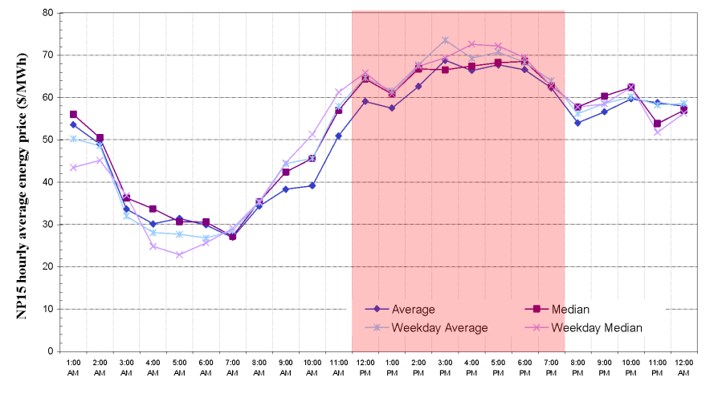
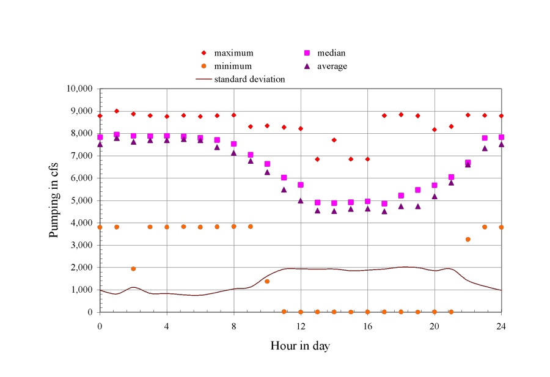

DSM2 Bay-Delta Tutorial 7: Clifton Court Diurnal Pumping
Purpose: The goal of this tutorial is to learn how to implement a diurnal pumping quota for Banks pumping (State Water Project). In the process you will learn how to track totals using the ACCUMULATE function.
Background: The Banks pumping facility is often operated on a diurnal schedule, emphasizing pumping during off-peak electricity hours. An example of summer electricity prices for the year 2005 is shown in Figure 1:

Figure 1: Example wholesale electricity prices in July 2005 (CWEMF, KT Shum)
An idealized schedule from the point of view of electricity would be to pump the maximum possible amount late at night until the daily pumping needs are satisfied. Actual hourly variations in pumping are shown in Figure 2. Numerous other factors (e.g. ensuring minimum stage requirements in the Forebay) can affect instantaneous maximum pumping, which is why we might consider an operating rule instead of a simple time series to model diurnal pumping.
In this tutorial we will emulate the ideal pumping schedule by tracking
the amount pumped since midnight and quitting once we have pumped a
total that satisfies the daily average requested by CALSIM. We will use
the ACCUMULATE function to track the total. In a later step we will
attenuate pumping to avoid drawing Clifton Court Forebay below -2ft
NGVD.

Figure 2: Diurnal Variation in Pumping, July-August 2004 (CWEMF, KT Shum)
The planning study we will use for this tutorial is ocap_sdip *provided in the study_templates directory. The choice between temporary and permanent barriers is not central to the material, though the SDIP project did propose higher pumping.*
Preparation
We will begin by creating a study space to house the planning study.
-
Copy the study template:
- In windows, navigate to \{DSM2_home}\study_templates. Copy and rename the ocap_sdip template to \{DSM2_home}\tutorial\ocap_sdip_diurnal_swp.
- If you have not already done so for a previous tutorial, copy the file ocap_2005A01A_EWA2_71_novamp_DV.dss (CALSIM output file used for planning runs) from \{DSM2_home}\timeseries to \{DSM2_home}\tutorial\data\calsim. Note that we just put this file in timeseries as a sample – in practice CalSim output will be exterior to the DSM2 distribution (or should go in the study folder).
-
Preprocess for sdip barriers:
- Rename config_sdip_ocap.inp to config_sdip_ocap_diurnal_ccfb.inp and open the file.
- Make sure that the run dates are set to the full 1974-1991 (01OCT1974 0000 – 01OCT1991 0000) sixteen year planning period. It is a good idea to preprocess the full period even if you want to run a subset of these dates.
- Set the DSM2MODIFIER to diurnal_pumping.
- Make sure that the DICU version in the configuration file is 2005, representing a future (2005) level of development.
- Makes sure the STAGE_VERSION in the configuration file is PLANNING-2-SL.
- Make sure the configuration file is pointing to the right
directory, file and DSS path to find the CalSim results. In this
case, set:
- CALSIMNAME to ocap_2005A01A_EWA2_71_novamp_DV (CalSim output file without the ".dss" extension)
- CALSIMSTUDY_ORIGINAL to 2005A01A
- CALSIMDIR to ../data/calsim
- Save your data
- Launch the preprocessing system. Obtain a command prompt and type:
> prepro config_sdip_ocap_diurnal_ccfb.inp
-
Add output for Clifton Court Forebay:
- In hydro.inp, add output that will allow you to more directly track the operations. Create an OUTPUT_RESERVOIR table. Create a 15min instantaneous output request with clfct or clifton_court as the name, clifton_court as the reservoir, none as the connecting node and flow-source as the variable. The flow-source output will give the total source and sink inflow to Clifton Court – it will differ from SWP pumping only by a small amount (due to Byron-Bethany Irrigation District).
-
Run DSM2:
- In the configuration file, set the dates 01JAN1975 to 25JAN1975 so that the run will take a short time. These dates will generate the features we want for the tutorial, including a period of low stage at Clifton Court Forebay under diurnal operation. Note that we always preprocess the full period even when we shorten the run.
- Open hydro.inp file and change the included configuration file to config_sdip_ocap_diurnal_ccfb.inp and save it.
- Run the sdip simulation for HYDRO by typing:
> hydro hydro.inp
- Examine the output:
Once you have run HYDRO, open the file and look at the flow-source output for Clifton Court. This variable represents exports out of Clifton Court Forebay, which are dominated by State Water Project pumping..
Diurnal Operating Rule
1. Create the diurnal rule with no Forebay stage protection:
-
- Create a file called oprule_diurnal_swp.inp. Create empty OPERATING_RULE and OPRULE_EXPRESSION tables. Alternatively, do this by copying, renaming and clearing the contents of another operating rule input file.
- Create an expression to accumulate daily State Water Project
(SWP) pumping since midnight:
- Name: daily_total_swp
- Definition: "ACCUMULATE(ext_flow(name=swp)*DT,0.0,HOUR==0)"
This reads "accumulate swp, starting at zero, resetting when the hour of the day is zero". We multiply by DT to get a volume (which makes the rule time step independent and allows comparison to a daily target). The time series reference comes from elsewhere in the input and is the daily average pumping rate. It is perfectly acceptable to use time series that are defined elsewhere in the DSM2 input without redefining it in the OPRULE_TIME_SERIES table – the latter is just there to allow you to define any additional time series you might need.
-
- Create an expression to quantify the da.ily target. Note that we are multiplying an average daily flow in cubic feet per second by the number of seconds in the day to obtain a volume. 1. Name: daily_target_swp 2. Definition: ts(name=swp)*(60*60*24)
- Create an expression that defines maximum physical SWP pumping
as a magnitude:
- Name: max_swp_pumping
- Definition: 9000.0
- Now, in the OPERATING_RULE table create a rule that pumps the
maximum until the daily total is reached:
- Name: swp_diurnal
- Action: "SET ext_flow(name=swp) TO IFELSE(abs(daily_total_swp) > abs(daily_target_swp), 0.0, -max_swp_pumping)". Note the quotes and the minus sign: SWP is really a sink, not a source.
- Trigger: Use STARTUP or TRUE for the trigger (the two do the same thing, and trigger exactly once at the beginning of the run). The rule will be in use unless it is displaced by another operating rule.
- In hydro.inp, add the new oprule_diurnal_swp.inp file at the bottom of the OPERATIONS include block..
- Run HYDRO on the simulation. Examine the output for HYDRO, including Clifton Court reservoir water levels, flow through the gates to node 72 and the "flow-source" output for the reservoir (which will differ from SWP pumping by a small amount due to Byron-Bethany Irrigation District). Are you getting the fully-on-fully-off pumping pattern you expect? Could the same schedule be prepared off-line in advance using a 15-min time series for SWP pumping? Does Clifton Court water surface go below the "warning" level of -2.0ft NGVD needed to maintain flow in the fish facilities?
- Now create an expression identifying a low stage condition:
- Name: ccfb_stage_low
- Definition: res_stage(res=clifton_court) \< -2.0
- Change the trigger for swp_diurnal to "NOT ccfb_stage_low", including the quotes.
- Create an expression that describes inflow into Clifton Court
from the outside channel:
- Name: ccfb_inflow
- Definition: res_flow(res=clifton_court,node=72)
- Create a new operating rule that covers the critical case:
- Name: swp_low_stage
- Action:
"SET ext_flow(name=swp) TO
-min2(abs(ccfb_inflow),max_swp_pumping)"
This rule sets exports equal to the inflow to Clifton Court, which
allows some pumping to continue as long as it does not further draw down
Clifton Court. A simple alternative would be just to set exports to
zero.
-
-
- Trigger: ccfb_stage_low
-
Note the minus sign, again because SWP exports are a sink rather than a source. The absolute sign is there to make sure the minimum function is not operating on any big transient negative flows.
-
- Rerun HYDRO. Are you getting the results you expected? Does Clifton Court stage go below -2.0? Are you still pumping according to the expected pattern? Could you implement this policy with a time series controlling SWP instead of an operating rule?